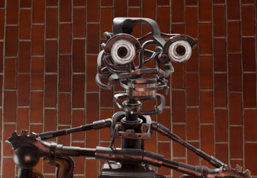

About
Gallery
Contact
Welcome to My Personal Website
Hi, I am Jamela Dale M. Fetalvo
My interests are;
watching a lot of movies, my favorites of which are: Puss in Boots, the entires Cars trilogy, and Coraline.
I like listening to music and albums. My favorite albums are, Sinister Minds, and After Studio Hours.
I also like to draw stuff.
My Favorite Image

My Favorite Audio